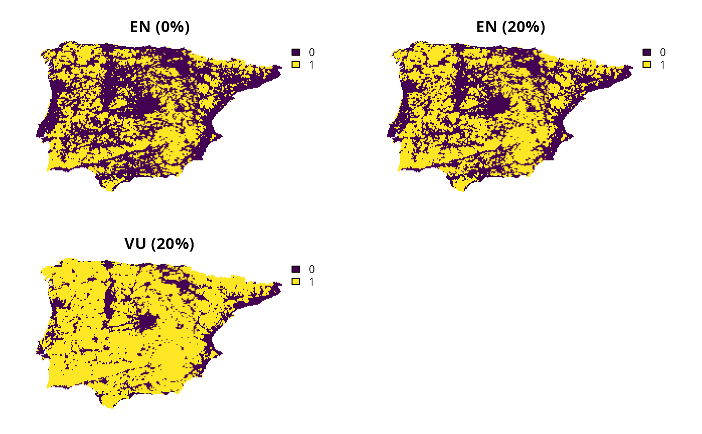

Specify targets based on the IUCN Red List of Threatened Species
Source:R/spec_rl_species_targets.R
spec_rl_species_targets.RdSpecify targets based on criteria from the IUCN Red
List of Threatened Species (IUCN 2025).
Briefly, this method can be used to set targets based on
criteria pertaining to geographic range size (Criterion B) and
population size reduction criteria (Criterion A).
To help prevent widespread features from obscuring priorities for
rare features, targets are capped following Butchart et al. (2015).
This method may be suitable for species protection at global and
and national scales (e.g., Jung et al. 2021, Ward et al. 2025).
Note that this function is designed to be used with add_auto_targets()
and add_group_targets().
Usage
spec_rl_species_targets(
status,
criterion_a,
criterion_b,
prop_uplift = 0,
method = "max",
cap_area_target = 1e+06,
area_units = "km^2"
)Arguments
- status
charactervalue denoting the IUCN Red List threat status used for target setting. Available options include"CR"(Critically Endangered),"EN"(Endangered), and"VU"(Vulnerable).- criterion_a
charactervalue indicating which subcriterion should be considered based on population size reduction. Available options include subcriterion"A1"(reduction that occurred in the past and the causes are reversible, understood, and have ceased),"A2"(reduction that occurred in the past and the causes may not be reversible, understood, or have ceased);"A3"(reduction is is inferred or suspected in the future), and"A4"(reduction includes a time period in the past and the future and causes may not be reversible, understood, or have ceased). For convenience, these options can also be specified with lower case letters. See Mathematical formulation below for details.- criterion_b
charactervalue indicating which subcriterion should be considered based on geographic range. Available options include subcriterion"B1"(extent of occupancy) and"B2"(area of occupancy). For convenience, these option can also be specified with lower case letters. See Mathematical formulation below for details.- prop_uplift
numericvalue denoting the percentage uplift as a proportion. Defaults to 0 (i.e., 0%).- method
characterindicating how the target thresholds should be calculated based on values derived from Criterion A and and Criterion B. Available options include"min"and"max". For example,method = "max"means that the target threshold should be calculated as a maximum of the values from Criterion A and Criterion B. Defaults to"max"as a precaution.- cap_area_target
numericvalue denoting the area-based target cap. To avoid setting a target cap, a missing (NA) value can be specified. Defaults to 1000000 (i.e., 1,000,000 km2).- area_units
charactervalue denoting the unit of measurement for the area-based arguments. Defaults to"km^2"(i.e., km2).
Value
An object (Method) for specifying targets that
can be used with add_auto_targets() and add_group_targets()
to update the targets for a problem().
Details
Targets based on criteria from the IUCN Red List of Threatened Species have been applied to global and national scale prioritizations (e.g., Jung et al. 2021; Fastré et al. 2021; Ward et al. 2025). Despite this, prioritizations based on these criteria may fail to identify meaningful priorities for prioritizations conducted at smaller geographic scales (e.g, local or county scales). For example, if this method is applied to smaller geographic scales, then the resulting prioritizations may select an overly large percentage of the study area, or be biased towards over-representing common and widespread species. This is because the target thresholds were developed based on criteria for promoting the long-term persistence of entire species. As such, if you are working at smaller scales, it is recommended to set thresholds based on that criteria are appropriate to the spatial extent of the planning region. Please note that this function is provided as convenient method to set targets for problems with a single management zone, and cannot be used for those with multiple management zones.
Mathematical formulation
This method involves setting target thresholds based on assessment
criteria from the International Union for the Conservation of Nature (IUCN)
Red List of Threatened Species (IUCN 2025).
To express this mathematically, we will define the following terminology.
Let \(f\) denote the total abundance of a feature (e.g., geographic
range size), \(a\) the threshold value from Criterion A based on the
specified threat status (per status, see below for details),
\(b\) the threshold value from Criterion B
based on the specified threat status (per status, see below for details),
\(p\) the percentage uplift as a proportion (per prop_uplift),
\(c\) the target cap (per cap_area_target and area_units), and
\(m()\) denote either \(max()\) or \(min()\) (per method).
Given this terminology, the target threshold (\(t\)) for a feature
is calculated as follows.
$$
t = min(m(b \times (1 + p), f \times ((1 + p) \times (1 - a))), c, f)
$$
Here \(a\) and \(b\) are equal to one of the following values
depending on status, criterion_a, and criterion_b.
Note that if criterion_a has a value of "A3" or "A4", then \(a\)
is assigned the same value as if it were "A2".
If
status = "CR"andcriterion_a = "A1", then \(a =\) 90%.If
status = "EN"andcriterion_a = "A1", then \(a =\) 70%.If
status = "VU"andcriterion_a = "A1", then \(a =\) 50%.If
status = "CR"andcriterion_a = "A2", then \(a =\) 80%.If
status = "EN"andcriterion_a = "A2", then \(a =\) 50%.If
status = "VU"andcriterion_a = "A2", then \(a =\) 30%.If
status = "CR"andcriterion_b = "B1", then \(b =\) 100 km2.If
status = "EN"andcriterion_b = "B1", then \(b =\) 5,000 km2.If
status = "VU"andcriterion_b = "B1", then \(b =\) 20,000 km2.If
status = "CR"andcriterion_b = "B2", then \(b =\) 10 km2.If
status = "EN"andcriterion_b = "B2", then \(b =\) 50 km2.If
status = "VU"andcriterion_b = "B2", then \(b =\) 2,000 km2.
Data calculations
This function involves calculating targets based on the spatial extent
of the features in x.
Although it can be readily applied to problem() objects that
have the feature data provided as a terra::rast() object,
you will need to specify the spatial units for the features
when initializing the problem() objects if the feature data
are provided in a different format. In particular, if the feature
data are provided as a data.frame or character vector,
then you will need to specify an argument to feature_units when
using the problem() function.
See the Examples section of the documentation for add_auto_targets()
for a demonstration of specifying the spatial units for features.
References
Butchart SHM, Clarke M, Smith RJ, Sykes RE, Scharlemann JPW, Harfoot M, Buchanan GM, Angulo A, Balmford A, Bertzky B, Brooks TM, Carpenter KE, Comeros‐Raynal MT, Cornell J, Ficetola GF, Fishpool LDC, Fuller RA, Geldmann J, Harwell H, Hilton‐Taylor C, Hoffmann M, Joolia A, Joppa L, Kingston N, May I, Milam A, Polidoro B, Ralph G, Richman N, Rondinini C, Segan DB, Skolnik B, Spalding MD, Stuart SN, Symes A, Taylor J, Visconti P, Watson JEM, Wood L, Burgess ND (2015) Shortfalls and solutions for meeting national and global conservation area targets. Conservation Letters, 8: 329–337.
Fastré C, van Zeist W-J, Watson JEM, Visconti P (2021) Integrated spatial planning for biodiversity conservation and food production. One Earth, 4:1635–1644.
IUCN (2025) The IUCN Red List of Threatened Species. Version 2025-1. Available at https://www.iucnredlist.org. Accessed on 23 July 2025.
Jung M, Arnell A, de Lamo X, García-Rangel S, Lewis M, Mark J, Merow C, Miles L, Ondo I, Pironon S, Ravilious C, Rivers M, Schepaschenko D, Tallowin O, van Soesbergen A, Govaerts R, Boyle BL, Enquist BJ, Feng X, Gallagher R, Maitner B, Meiri S, Mulligan M, Ofer G, Roll U, Hanson JO, Jetz W, Di Marco M, McGowan J, Rinnan DS, Sachs JD, Lesiv M, Adams VM, Andrew SC, Burger JR, Hannah L, Marquet PA, McCarthy JK, Morueta-Holme N, Newman EA, Park DS, Roehrdanz PR, Svenning J-C, Violle C, Wieringa JJ, Wynne G, Fritz S, Strassburg BBN, Obersteiner M, Kapos V, Burgess N, Schmidt- Traub G, Visconti P (2021) Areas of global importance for conserving terrestrial biodiversity, carbon and water. Nature Ecology and Evolution, 5:1499–1509.
Mogg S, Fastre C, Jung M, Visconti P (2019) Targeted expansion of Protected Areas to maximise the persistence of terrestrial mammals. Preprint at bioxriv, doi:10.1101/608992 .
See also
Other target setting methods:
spec_absolute_targets(),
spec_area_targets(),
spec_duran_targets(),
spec_interp_absolute_targets(),
spec_interp_area_targets(),
spec_jung_targets(),
spec_max_targets(),
spec_min_targets(),
spec_polak_targets(),
spec_pop_size_targets(),
spec_relative_targets(),
spec_rl_ecosystem_targets(),
spec_rodrigues_targets(),
spec_rule_targets(),
spec_ward_targets(),
spec_watson_targets(),
spec_wilson_targets()
Examples
# \dontrun{
# set seed for reproducibility
set.seed(500)
# load data
sim_complex_pu_raster <- get_sim_complex_pu_raster()
sim_complex_features <- get_sim_complex_features()
# create base problem
p0 <-
problem(sim_complex_pu_raster, sim_complex_features) %>%
add_min_set_objective() %>%
add_binary_decisions() %>%
add_default_solver(verbose = FALSE)
# note that the following targets will be specified based on subcriterion
# A2 under the assumption that protected areas will be effectively managed,
# and B2 because the feature data (per sim_complex_features) characterize
# area of occupancy
# create problem with targets based on criteria from the IUCN Red List of
# Threatened Species for the Endangered threat status with a 0% uplift
p1 <-
p0 %>%
add_auto_targets(
method = spec_rl_species_targets(
status = "EN",
criterion_a = "A2",
criterion_b = "B2",
prop_uplift = 0
)
)
# create problem with targets based on criteria from the IUCN Red List of
# Threatened Species for the Endangered threat status with a 20% uplift
p2 <-
p0 %>%
add_auto_targets(
method = spec_rl_species_targets(
status = "EN",
criterion_a = "A2",
criterion_b = "B2",
prop_uplift = 0.2
)
)
# create problem with targets based on criteria from the IUCN Red List of
# Threatened Species for the Vulnerable threat status with a 20% uplift
p3 <-
p0 %>%
add_auto_targets(
method = spec_rl_species_targets(
status = "VU",
criterion_a = "A2",
criterion_b = "B2",
prop_uplift = 0.2
)
)
# solve problems
s <- c(solve(p1), solve(p2), solve(p3))
names(s) <- c("EN (0%)", "EN (20%)", "VU (20%)")
# plot solutions
plot(s, axes = FALSE)

# }